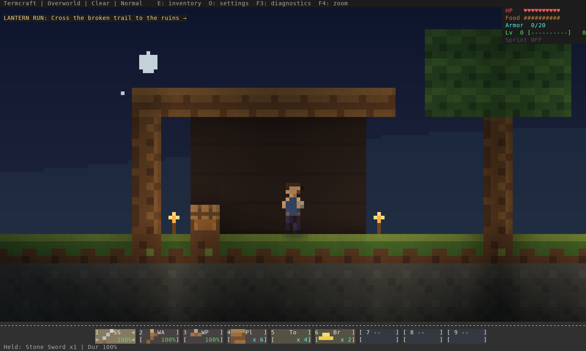
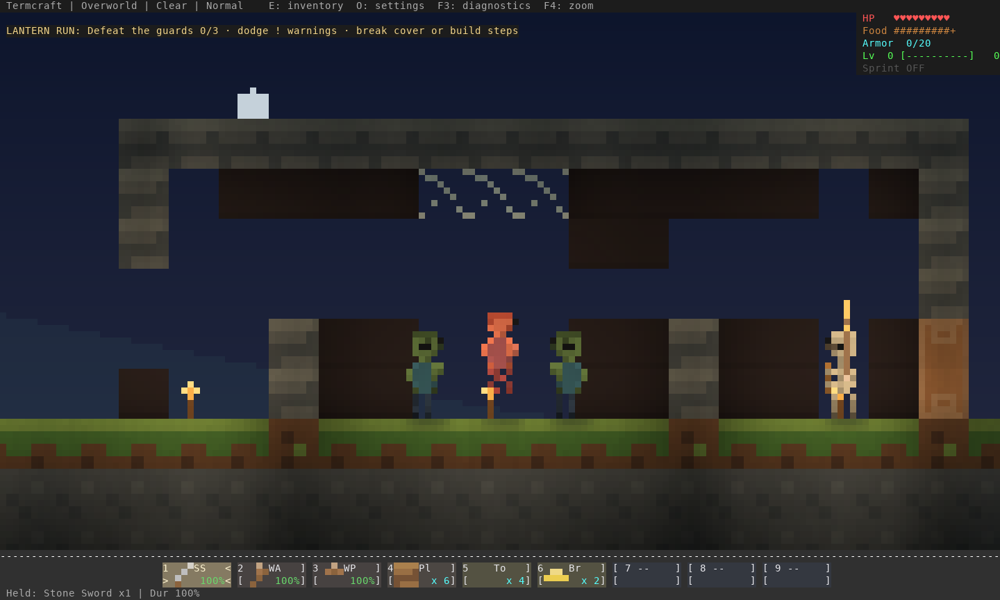
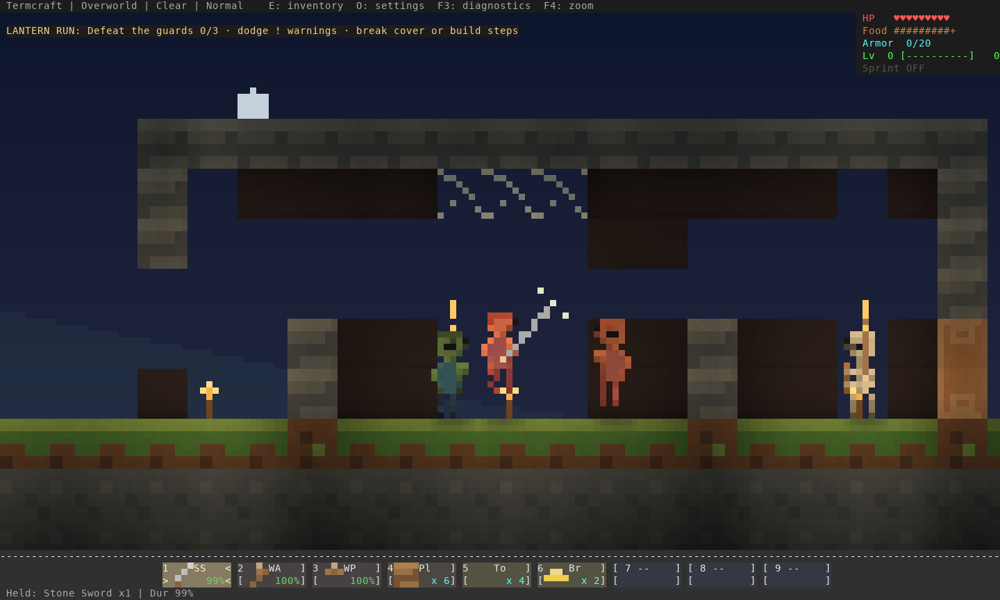
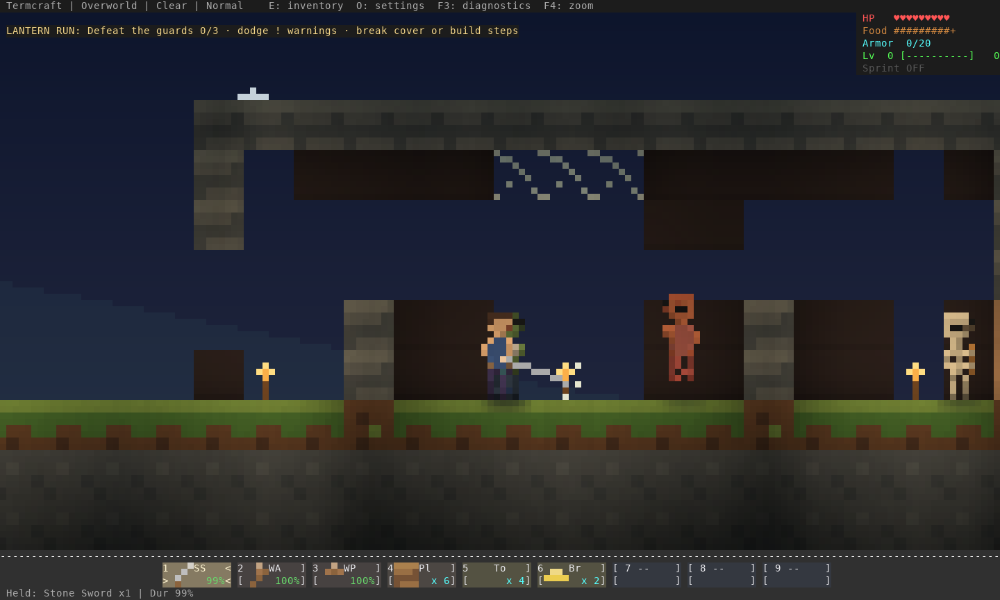
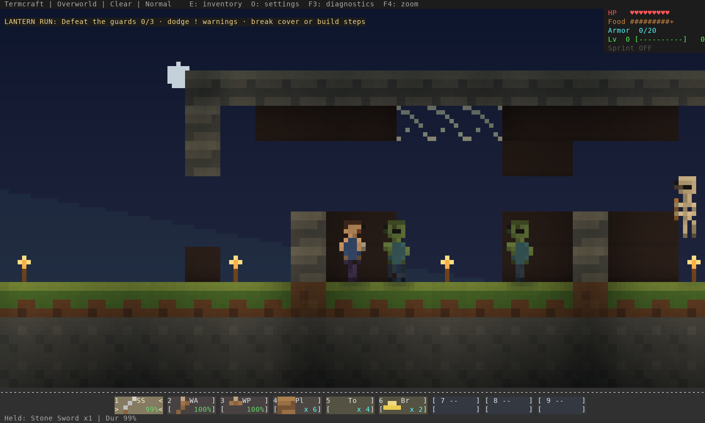
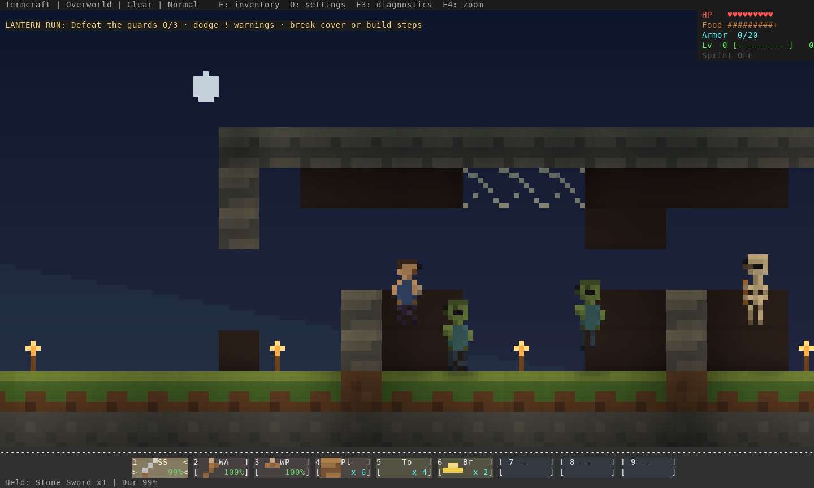
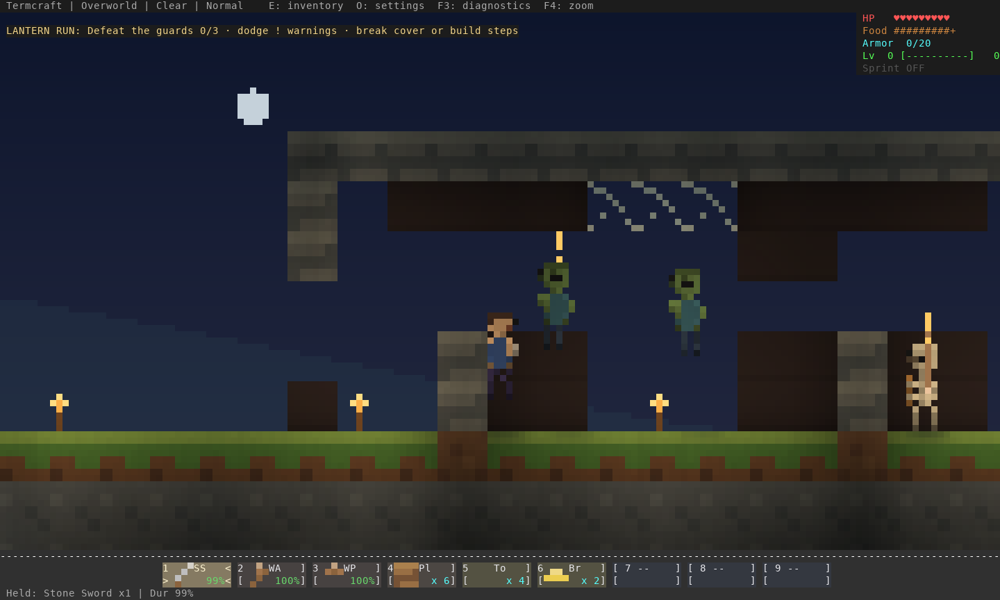
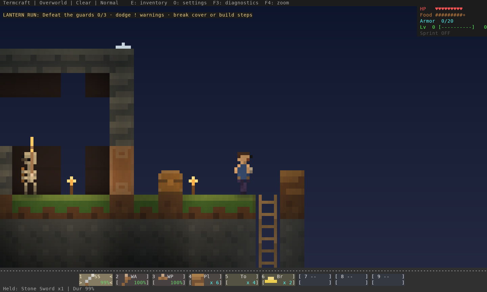

Actual terminal renderer captures on authored trial terrain. Player placement is staged for focused pose review; these images are separate from the normal-rule CLI playthrough. Human feel and full-game quality remain open. Review notes and reproduction.
Run ./termcraft trial to try it. Compare .







